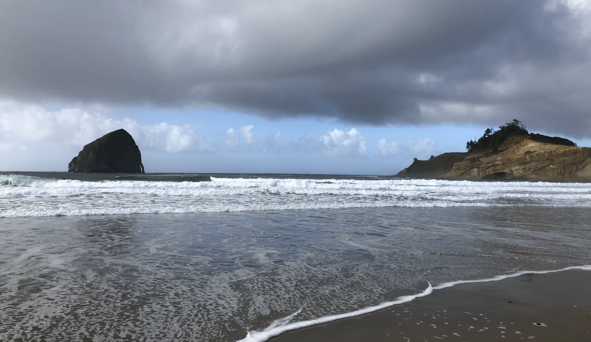

Welcome to my website that serves as my portfolio capstone for the College Student Services Administration (CSSA) program for my Masters of Education at Oregon State University (OSU).
Throughout this site, you will be given a look at how my experiences and endeavors for the last two years have culminated in my completion of the CSSA program.
You will find in this portfolio that I have provided reflections on each of the required components that serve to provide context to my experiences in engaging with and mastering the competencies and core values. I hope you enjoy my moments of reminiscing and speaking to my CSSA experience.